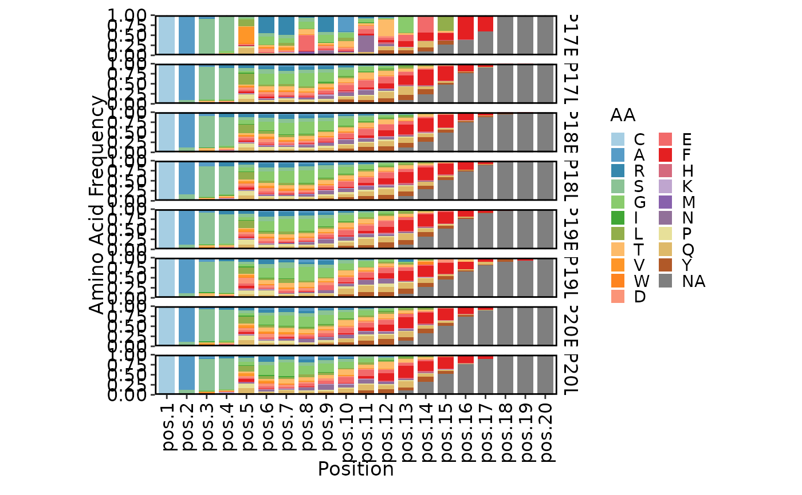
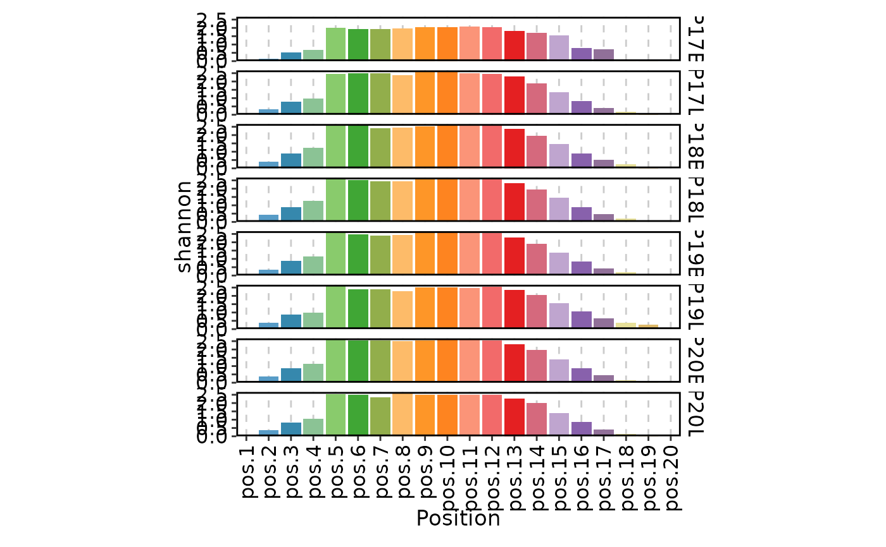
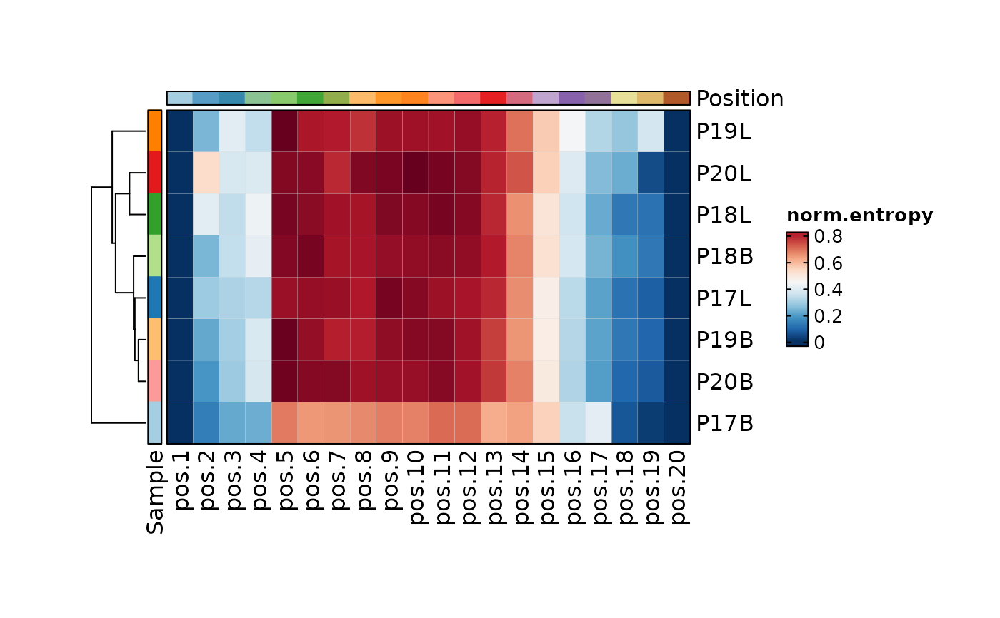
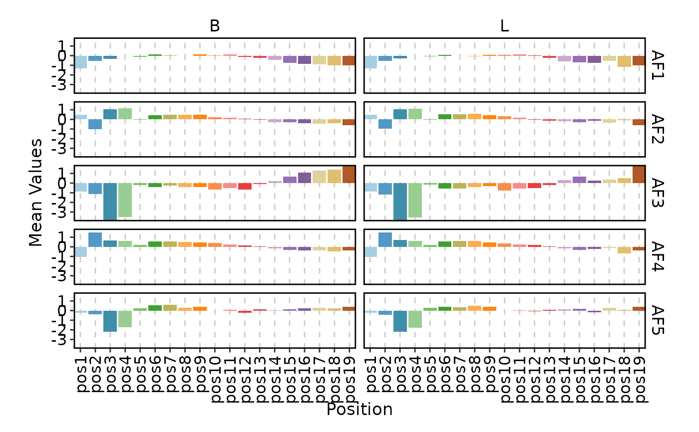
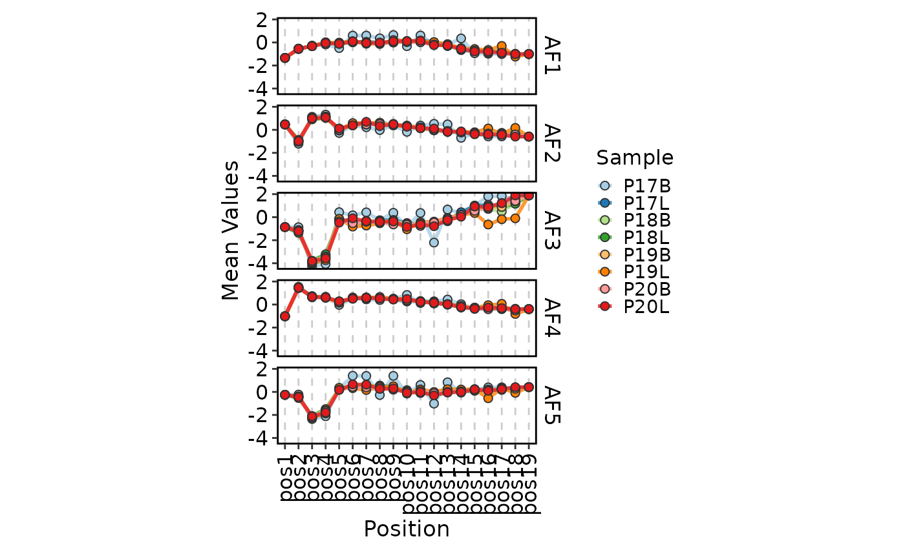

Visualize positional properties of CDR3 sequences
Source:R/clonalpositionalplot.R
ClonalPositionalPlot.RdThe complementarity-determining region 3 (CDR3) is the most variable region of T cell and B cell receptors, and is the primary determinant of antigen specificity. Analyzing how amino acid composition, diversity, and physicochemical properties vary across CDR3 positions provides insight into repertoire structure, selection pressures, and the biophysical constraints that shape antigen recognition.
Usage
ClonalPositionalPlot(
data,
chain = "TRB",
aa_length = 20,
group_by = "Sample",
group_by_sep = "_",
split_by = NULL,
method = c("AA", "shannon", "inv.simpson", "norm.entropy", "Atchley", "Kidera",
"stScales", "tScales", "VHSE"),
order = NULL,
plot_type = c("bar", "line", "heatmap", "box", "violin"),
theme_args = list(),
xlab = NULL,
ylab = NULL,
facet_by = NULL,
facet_ncol = NULL,
facet_nrow = NULL,
aspect.ratio = NULL,
...
)Arguments
- data
The product of
scRepertoire::combineTCR(),scRepertoire::combineBCR(), orscRepertoire::combineExpression(). Must contain columns with CDR3 amino acid sequences (e.g.,TRA_cdr3_aa,TRB_cdr3_aa).- chain
Character; the TCR or BCR chain to analyze. Default is
"TRB". Common values include"TRA"(TCR alpha),"TRB"(TCR beta),"TRG"(TCR gamma),"TRD"(TCR delta),"IGH"(BCR heavy),"IGL"(BCR lambda), and"IGK"(BCR kappa). The chain determines which CDR3 column is used for analysis.- aa_length
Integer; the number of CDR3 amino acid positions to analyze, counting from the N-terminus. Default is
20. Sequences shorter than this length contribute data only to the positions they span. Increase for receptors with longer CDR3s (e.g., BCR heavy chain).- group_by
Character vector; the column(s) in
datato group samples by. Default is"Sample". Each unique combination of grouping values becomes a distinct line/bar/facet in the plot. For box and violin plot types in entropy mode,group_bymust be explicitly provided (cannot be the default"Sample").- group_by_sep
Character; the separator used when concatenating multiple
group_bycolumns into a single identifier. Default is"_".- split_by
Character vector; column(s) in
datato split the plot by, producing separate sub-plots for each unique combination. Default isNULL.- method
Character; the analysis method. One of:
"AA"— Amino acid frequency at each position (default)."shannon"— Shannon entropy (diversity)."inv.simpson"— Inverse Simpson index (diversity, emphasizes dominant amino acids)."norm.entropy"— Normalized entropy (diversity, scaled to the range 0–1)."Atchley"— Atchley factor scores (5 properties)."Kidera"— Kidera factor scores (10 properties)."stScales"— ST-scale property scores."tScales"— T-scale property scores."VHSE"— VHSE property scores (8 descriptors).
See the Analysis methods and Physicochemical property sets sections for details on each method.
- order
A named list specifying the order of factor levels for grouping variables. For example,
list(Type = c("L", "B")). Default isNULL, which uses the order present in the data. Names in the list must match column names indata.- plot_type
Character; the type of visualization. One of
"bar"(default),"line","heatmap","box", or"violin". Not all plot types are available for all methods — see the Analysis methods section for the full mapping.- theme_args
A named list of arguments passed to
ggplot2::theme()for customizing the plot appearance. For bar plots,panel.grid.major.ydefaults toelement_blank()for a cleaner look.- xlab
Character; the x-axis label. Default is
NULL, which automatically uses"Position".- ylab
Character; the y-axis label. Default is
NULL, which automatically uses a method-appropriate label ("Amino Acid Frequency"for AA, the method name for entropy, or"Mean Values"for properties).- facet_by
A character vector of column names to facet the plots by. Default is
NULL. Note that for AA and property bar plots,facet_byis set internally and should not be specified manually (doing so will raise an error). For entropy line plots, it can be used to add an additional faceting dimension.- facet_ncol
Integer; the number of columns in the facet grid. Default is
NULL, which uses1for bar plots and automatic determination for other plot types.- facet_nrow
Integer; the number of rows in the facet grid. Default is
NULL. For property bar plots, defaults to the number of properties in the selected factor set.- aspect.ratio
Numeric; the aspect ratio (height / width) of plot panels. Default is
NULL, which uses method- and plot_type-appropriate defaults (e.g.,2 / aa_lengthfor entropy bar plots,6 / aa_lengthfor entropy line plots,10 / aa_lengthfor box/violin plots).- ...
Additional arguments passed to the underlying plotthis visualization function, depending on
plot_type:For
"bar":plotthis::BarPlot()For
"line":plotthis::LinePlot()For
"heatmap":plotthis::Heatmap()For
"box":plotthis::BoxPlot()For
"violin":plotthis::ViolinPlot()
Common arguments include
title,legend.position, and color palette parameters. See the respective plotthis documentation for available options.
Details
ClonalPositionalPlot computes and visualizes position-level properties of
CDR3 sequences by aligning them at their N-terminus (Cys residue) and analyzing
each position independently. Three fundamentally different categories of
analysis are available through the method parameter:
Amino acid frequency (
method = "AA"): Raw frequency of each amino acid at each position, displayed as stacked bars or a pie-chart heatmap. This reveals position-specific amino acid preferences (e.g., hydrophobic residues in the center of the CDR3 loop, or glycine enrichment at turn positions).Positional entropy (
method = "shannon","inv.simpson", or"norm.entropy"): Quantifies the diversity of amino acid usage at each position. Low entropy at a position indicates conservation (often structural constraint), while high entropy indicates variability (potential antigen contact). Supports bar, line, heatmap, box, and violin plot types, with box/violin requiring agroup_byvariable for comparisons.Physicochemical properties (
method = "Atchley","Kidera","stScales","tScales", or"VHSE"): Each amino acid is represented by a set of numeric factor scores that capture its physicochemical properties (e.g., hydrophobicity, size, charge, secondary structure propensity). These are averaged at each position to reveal trends along the CDR3 sequence. Supports bar and line plot types.
The function delegates computation to three scRepertoire functions:
scRepertoire::percentAA() for amino acid
frequency, scRepertoire::positionalEntropy()
for entropy metrics, and scRepertoire::positionalProperty()
for physicochemical property scores.
Note
Positional analysis requires CDR3 amino acid sequences. These are automatically extracted by scRepertoire during data processing. Ensure your input data has been processed with
scRepertoire::combineTCR()orscRepertoire::combineBCR().For the
"AA"method,facet_byis internally set togroup_byand must not be provided by the user. The same applies to property bar plots.Box and violin plot types (entropy methods only) require
group_byto be explicitly set to a value other than the default"Sample". This is because these plots need meaningful groups to compare distributions.Property methods (
"Atchley","Kidera", etc.) only support"bar","line", and in some cases"heatmap"plot types. Box and violin plots are not available for property methods.CDR3 sequences shorter than
aa_lengthwill have missing data at C-terminal positions. This can introduce noise at those positions, especially for entropy and property analyses. Consider the length distribution of your CDR3s when choosingaa_length.The
"AA"heatmap uses a pie-chart cell type (cell_type = "pie"), where each cell represents a position and pie segments show amino acid composition. This is a distinctive visualization unique to this method.
Analysis methods
The method parameter selects both the computational method and determines
which plot types are available:
Amino acid frequency ("AA"):
Computes the frequency of each of the 20 standard amino acids at every CDR3
position up to aa_length. Plot types:
"bar"— Stacked bar chart with one bar per position, colored by amino acid. Faceted bygroup_by.facet_byis not available (set internally)."heatmap"— Pie-chart heatmap where each cell is a position and the pie segments show amino acid proportions at that position. Groups are on rows.
Entropy methods ("shannon", "inv.simpson", "norm.entropy"):
Each produces a single diversity value per position per sample. Plot types:
"bar"— Bar chart of diversity per position, faceted bygroup_by."line"— Line plot connecting positions, with each group as a separate line. Useful for comparing diversity trends between conditions."heatmap"— Position-by-group matrix of diversity values."box"— Box plot summarizing diversity across positions for each group. Requiresgroup_byto be provided (not"Sample")."violin"— Violin plot variant of the box plot. Requiresgroup_by.
Property methods ("Atchley", "Kidera", "stScales", "tScales", "VHSE"):
Each yields multiple numeric property scores per position. Plot types:
"bar"— Mean property values per position, faceted by property andgroup_by.facet_byis not available (set internally)."line"— Line plot of mean property values by position, withgroup_byas line grouping and"property"as faceting.
Physicochemical property sets
Each property method represents amino acids using a different set of derived factors. The choice depends on the biological question:
Atchley factors (
"Atchley"): Five factors derived from 494 amino acid properties — Factor I (polarity / hydrophobicity), Factor II (secondary structure), Factor III (molecular size), Factor IV (codon diversity), and Factor V (electrostatic charge). Widely used and interpretable.Kidera factors (
"Kidera"): Ten factors derived from 188 physical properties of amino acids, capturing more granular property variation than Atchley factors.VHSE (
"VHSE"): Vectors of Hydrophobic, Steric, and Electronic properties — eight descriptors derived from 50 physicochemical properties.stScales (
"stScales"): A set of scales derived from the structural topology of proteins (ST-scale), emphasizing local structural context.tScales (
"tScales"): T-scales derived from the topological properties of amino acids (T-scale), focusing on structural and folding properties.
CDR3 length and alignment
The aa_length parameter controls how many positions from the CDR3 are
analyzed. CDR3 sequences are aligned at their N-terminus (the conserved
cysteine residue), and positions beyond aa_length are excluded. Sequences
shorter than a given position contribute no data to that position. This means:
A larger
aa_lengthincludes more positions but the C-terminal positions may have sparser data (fewer sequences reach those lengths).The default of 20 amino acids captures the majority of typical TCR beta chain CDR3 lengths, though BCR heavy chain CDR3s can be substantially longer.
For entropy and property methods, sparse positions may show artificially low or noisy values — consider the distribution of CDR3 lengths in your dataset when setting
aa_length.
See also
ClonalKmerPlotfor k-mer (short motif) analysis of CDR3 sequencesClonalLengthPlotfor CDR3 length distribution analysisClonalDiversityPlotfor repertoire-level diversity metricsClonalGeneUsagePlotfor V(D)J gene segment usage analysisscRepertoire::percentAA(),scRepertoire::positionalEntropy(),scRepertoire::positionalProperty()for the underlying computational methods
Examples
# \donttest{
set.seed(8525)
data(contig_list, package = "scRepertoire")
data <- scRepertoire::combineTCR(contig_list,
samples = c("P17B", "P17L", "P18B", "P18L", "P19B","P19L", "P20B", "P20L"))
data <- scRepertoire::addVariable(data,
variable.name = "Type",
variables = factor(rep(c("B", "L"), 4), levels = c("L", "B"))
)
ClonalPositionalPlot(data)

ClonalPositionalPlot(data, method = "shannon")

ClonalPositionalPlot(data, method = "norm.entropy", plot_type = "heatmap")

ClonalPositionalPlot(data, method = "Atchley", group_by = "Type", plot_type = "bar")

ClonalPositionalPlot(data, method = "Atchley", plot_type = "line")

# }